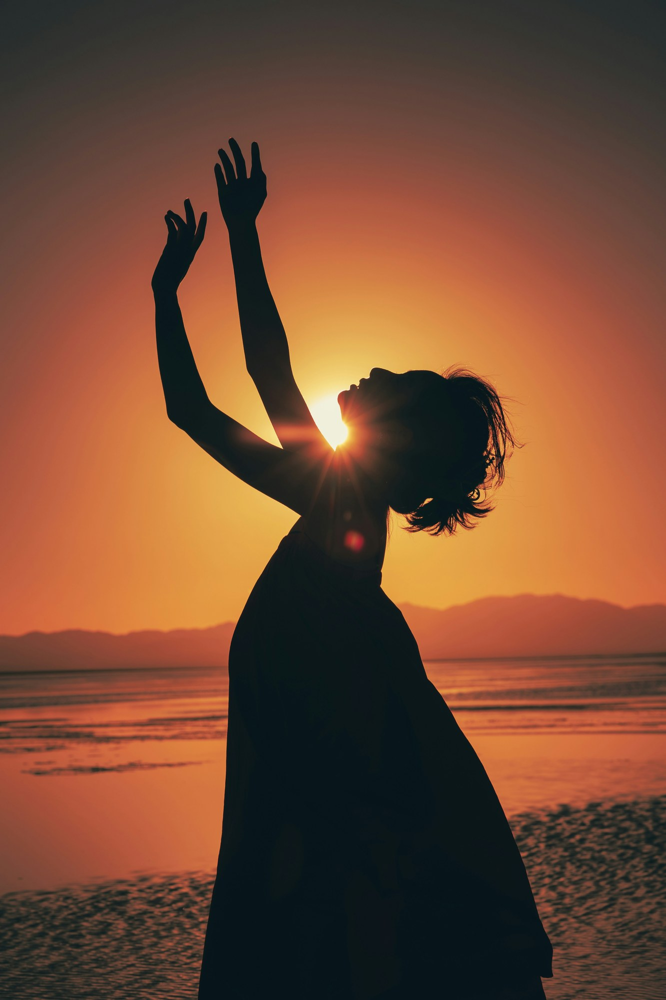
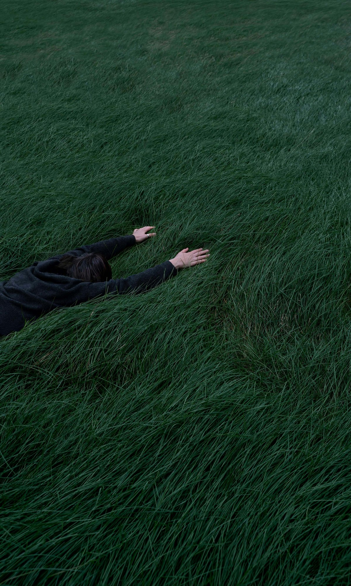

About
the Practice
In 2026, Alexandra began transforming her Dance of the Elements practice into women’s intuitive movement sessions. Her work is influenced by the teachings of Stefana Serafina and her Deep Body Institute in San Francisco, particularly her approach to embodied awareness and deep healing through the body. Alexandra’s practice remains distinctly elemental, drawing on natural landscapes, cycles, sensation and imagination, while creating space for deeper self-inquiry and embodied healing.
Her work now sits at the meeting point of dance, yoga, nature and the inner landscape. After many years of training bodies to perform, Alexandra is increasingly interested in creating spaces where women can listen to their bodies, move intuitively and reconnect with an inner knowing that does not need to be performed.
Wednesday
Sessions
Classes run alongside the school term
Led by Alexandra Tylee

Kotinga Hall
